Люксметр графический ЛГ09
USB
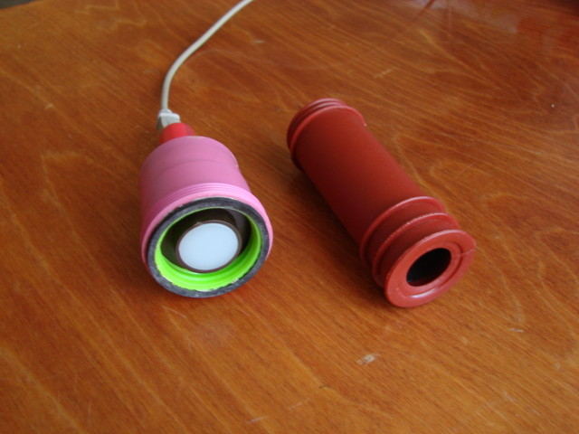
Люксметр с головкой с
молочным стеклом, рядом насадка
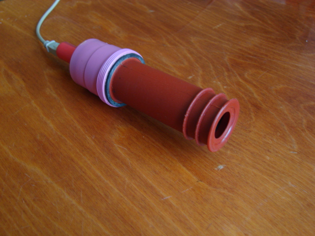
Люксметр с головкой с молочным
стеклом и установленной насадкой
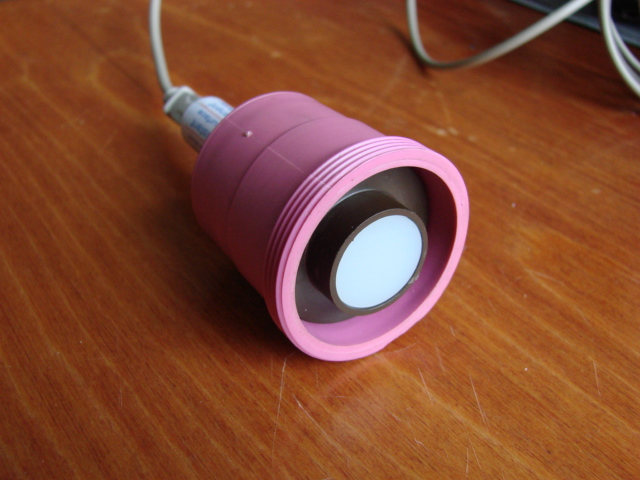
Люксметр с головкой с молочным
стеклом
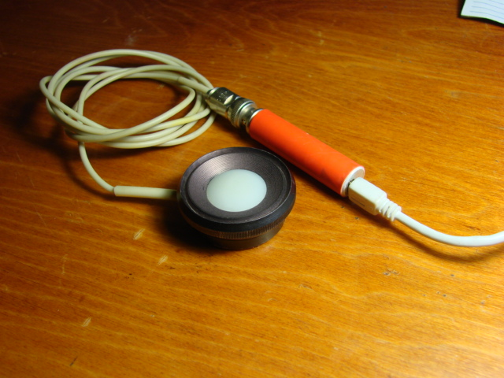
Люксметр с выносной головкой
Графики записанных
люксметром импульсных
сигналов - позволяют оценить крутизну фронтов и спадов
импульсов, способность люксметра записывать сигналы разной частоты.
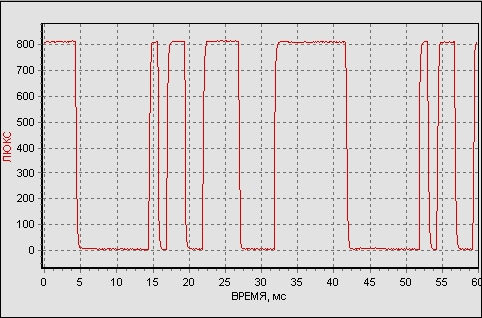
Повторяющаяся
последовательность: по одному периоду каждой частоты 400, 200, 100
и 50 Гц
Источник тестовых световых импульсных последовательностей - светодиод,
управляемый микроконтроллером.
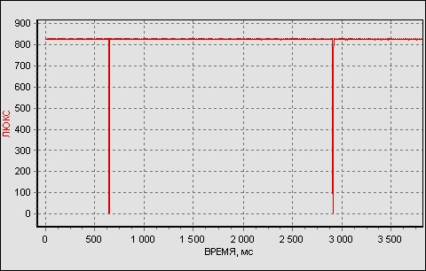
Выключение
светодиодного светильника раз в 2,7с
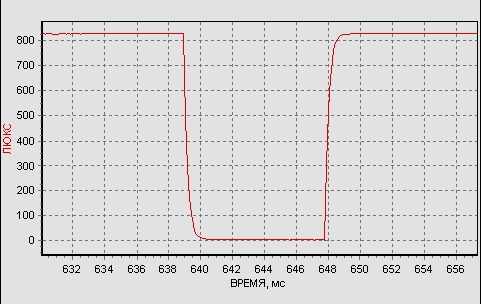
Фрагмент
того же графика - выключение светодиодного светильника на 8,9
миллисекунды
Люксметр ЛГ09 обладает более широкими возможностями для записи
сигналов, чем
люксметр ЛГ05, поэтому люксметром ЛГ09 можно записать такие же световые сигналы,
которые способен зарегистрировать люксметр ЛГ05.
С переходом
на светодиодное освещение измерения
пульсаций источников света стали особенно актуальными.
Если пульсации ламп накаливания и энергосберегающих ламп отвечали
требованиям СНиП и мало отличались у ламп разных производителей,
то светодиодные лампы, в т.ч. "из Европы", по уровню пульсаций
часто оказываются непригодными для освещения рабочих мест и мест отдыха.
А
использование ламп с высоким уровнем пульсаций для освещения
вращающихся объектов вообще травмоопасно - из-за стробоскопического
эффекта, например, вращающийся шпиндель станка может показаться
неподвижным.
Коэффициент пульсаций освещённости рассчитывается по формуле: Кп
= (Eмакс. - Eмин.) / (2 х Eсредн.),
где Емакс, Емин., Есредн. - максимальное, минимальное и среднее
значение освещенности.
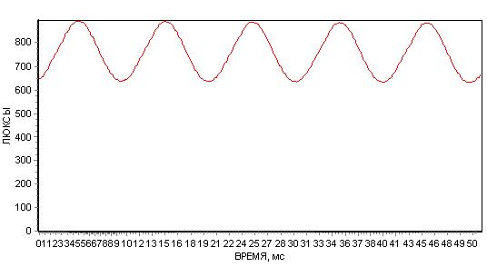
Лампы накаливания
инерционны, при переходе питающего переменного напряжения через ноль
нить накала не успевает заметно остыть, поэтому яркость лампы падает
незначительно.
Кп=0,17, частота пульсаций
Fп=100Гц (это двойная частота сети 50Гц 220В - питающее переменное
напряжение дважды за период достигает нулевого значения)
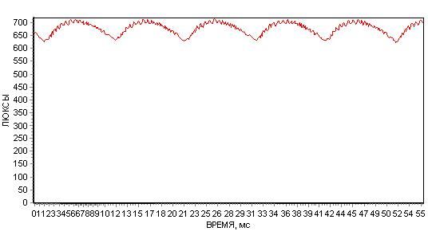
У энергосберегающей
лампы Philips 14W Кп=0,067, Fп=100Гц
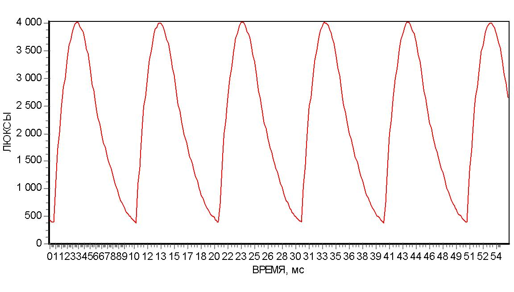
Светодиодные
лампы
обладают малой инерционностью. Если производитель сэкономил на
комплектации драйвера лампы, те же 100Гц пульсации оказываются
огромными - при переходе питающего переменного напряжения через ноль
ток через светодиоды становится нулевым и светодиоды успевают
выключиться.
Светодиодная
лампа
220В 8Вт с обычным патроном E27, производитель неизвестен.
Кп=0,82, Fп=100Гц
Следующая пара светодиодных
ламп Civilight
была представлена на выставке "КИП, электроника, энергетика". Владелец
утверждал, что лампы соответствуют европейским требованиям и привезены
из Европы.
Однако сайт http://ru.civilight.com
китайский.
Интересно,
что обе лампы 220В 4Вт обладают совершенно разным характером и уровнем
пульсаций. Измерения для этой пары ламп выполнялись на одинаковом
расстоянии при одинаковой внешне засветке.
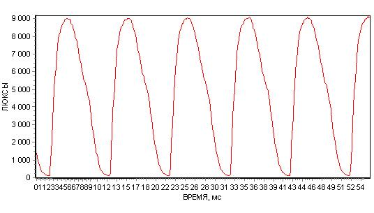
Светодиодная лампа
Civilight с холодным свечением, 220В 4Вт, Кп=0,93, Fп=100Гц
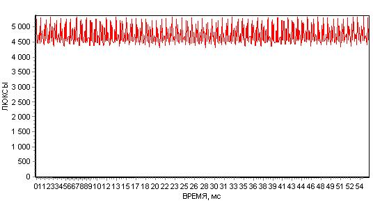
Светодиодная
лампа
Civilight с теплым свечением, 220В 4Вт, Кп=0,11, Fп=3500Гц - считается,
что при частоте выше 300Гц пульсации не воспринимаются мозгом и не
приводят к утомлению человека.
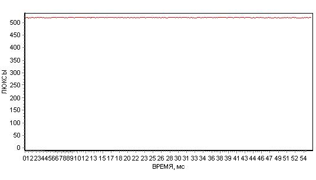
При желании можно обеспечить светодиодное освещение без пульсаций:
Светодиодная лента,
питающаяся от AC-DC преобразователя с выходным напряжением +12В.
Одна из статей о пульсациях на сайте Научно-исследовательского
института ОХРАНЫ ТРУДА в г.Иваново:
Ильина Е.И., Частухина Т.Н., "ПОЧЕМУ
НЕ ПРИНИМАЮТСЯ МЕРЫ ДЛЯ СНИЖЕНИЯ ПУЛЬСАЦИИ ОСВЕЩЕННОСТИ"target="_blank"